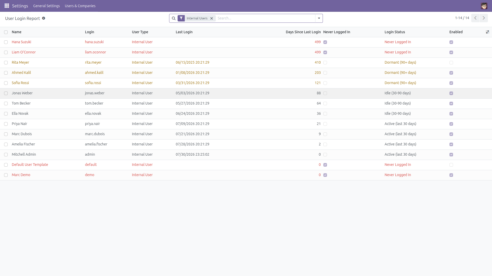
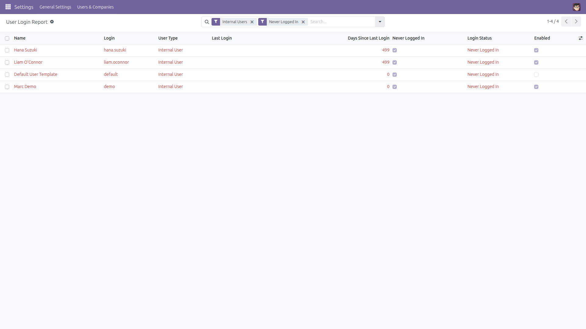
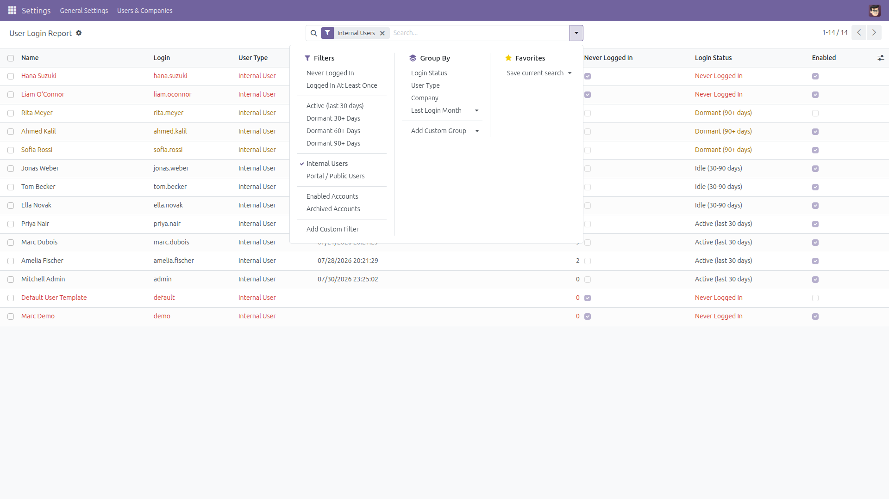
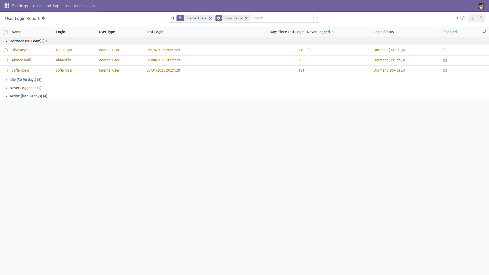

User Login Report
Who actually uses this system?
Odoo shows a “Latest authentication” date on the user form and nothing else, so answering that question means writing SQL against res_users_log. This module adds a read-only report of every user with the real last login, how many days ago it was, and a clear flag for accounts that have never logged in.
Free and open source (LGPL-3), Odoo 14.0 through 19.0.
- The real last login — the latest login record per user, not any login record.
- Days since last login — a genuine column you can sort, filter and export on.
- Never Logged In — accounts created and never used are flagged in red.
- Login status — Never / Active (last 30 days) / Idle (30-90 days) / Dormant (90+ days), ready to group by.
- Filters that answer real questions — dormant 30/60/90+ days, internal vs portal, enabled vs archived accounts, or your own “days since login at least N”.
- Export-friendly — select all and export to spreadsheet for a licence or security review.
- Read-only and fast — one grouped SQL query, no per-user loop, nothing in your database is modified.
- Admin only, multi-company safe — visible to the Administration / Settings group, and it ships the same record rule Odoo applies to users, so it never shows more than the standard Users list.
Screenshots

Every user with the real last login, days since last login, and login status — sorted by the longest silence first.

The Never Logged In filter: accounts that were created and never used, flagged in red.

Ready-made filters: never logged in, dormant 30/60/90+ days, active in the last 30 days, internal vs portal, enabled vs archived.

Grouped by login status — how many accounts are active, idle, dormant or never used, at a glance.
Installation
- Copy the module into your addons path, or install it from the Apps list.
- Open Apps, remove the “Apps” filter, search for User Login Report and click Install.
- Only the standard
base module is required.
Configuration
- No configuration is needed — the report works as soon as the module is installed.
- Access is restricted to the Administration / Settings group; no other user can read the report.
- Optional: mark the menu as a favourite for one-click access.
Usage
- Go to Settings → Users & Companies → User Login Report.
- The list opens on internal users, longest silence first.
- Apply a filter — Never Logged In, Dormant 90+ Days, Active (last 30 days), Portal / Public Users, Archived Accounts — or type a number in Days since login (at least).
- Group by Login Status to count active, idle, dormant and never-used accounts.
- Select all and use Export for your licence review, dormant-account audit or clean-up plan.
Version notes
Identical behavior on every supported series (14.0 – 19.0). “Dormant” means the account logged in once and then went quiet — accounts that were never used have their own filter and status, so the two counts never overlap. The OdooBot / superuser system account is excluded.
License: LGPL-3 · Source on GitHub · Issues and contributions welcome.